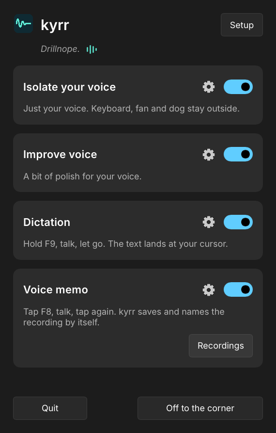

Noise suppression and dictation for Windows and Linux
kyrr is a free, open-source app. It removes background noise from your microphone and converts speech to text in German, English and more European languages. All audio is processed on your computer.

Hold F9, speak, release: the text appears where the cursor is.
Features
Noise suppression
Removes background noise such as typing, fans or traffic from the microphone signal in real time. kyrr uses the neural network DPDFNet, with a large model and a small one that needs less processing power. Apps such as Teams, Zoom, Discord, OBS or a browser receive the cleaned sound without any change to their settings.
Improve voice
Filter for low rumble, tone presets (Neutral, Warm, Clear, Bright or custom), compressor, de-esser, pop protection and automatic volume. Default: neutral tone, medium compression, light de-essing, rumble filter and automatic volume. Everything can be changed in Settings.
Dictation
Hold F9 while you speak. When you release it, kyrr types the text at the cursor, in the app you are typing in. German, English and more European languages, such as French, Spanish, Italian or Dutch. “New line” inserts a line break. While you dictate, a small wave at the bottom of the screen shows that kyrr is listening, with the words heard so far, and then that it is writing. Instead of F9 you can use F8, Pause or right Ctrl, or tap once to start and once to stop.
Level check
Meters show what the microphone picks up and what apps receive. A ten-second test records your voice and plays it back before and after processing. You can also listen to yourself live on headphones.
How it works
- Installation. Windows: an installer, which needs administrator rights. Linux: a single AppImage file, no administrator rights. kyrr sets itself up on first start.
- Audio. On Windows, kyrr adds a filter to the Windows audio system that runs directly on the microphone. On Linux, kyrr creates a PipeWire microphone called “kyrr” and makes it the default. Your apps need no changes. If you switch to another microphone, kyrr switches with it.
- Dictation. The first time you dictate, kyrr downloads the speech model for your language once (German 900 MB, English 663 MB, other European languages 900 MB). After that, dictation works offline.
- Updates. kyrr checks once a day for a new version and tells you about it. On Windows, “Update” installs it. On Linux, run the install commands again; a running kyrr is replaced by the new version.